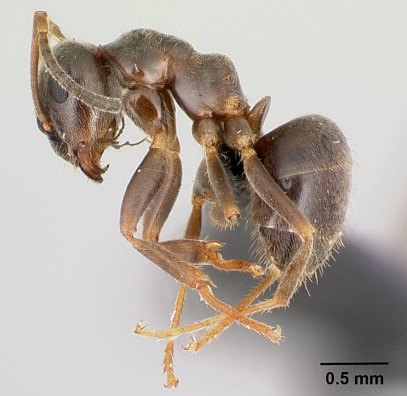

Ant Morphology
Interactive anatomy guide - click on a feature name to highlight it on the diagram

Head Features (click to highlight)
Mesosoma Features (click to highlight)
Metasoma Features (click to highlight)
Morphometric Definitions
CL Maximal Length measured in the median line, from posterior side of the head to fore border of the clypeus (S264).
CI Cephalic Index = (CW/CL) x 100
CW Maximum Cephalic Width. Can include eyes.
ClyPub Unilateral count of all pubescent setae projecting more than 10 µm from the anterior edge of the clypeus.
ClypSet Presence of determining setal rows on the clypeus (S281). Values 1-5 indicate distribution pattern.
CS Cephalic Size: arithmetic mean of CW and CL.
CUHL Greatest length of setae on the posterior side of the head.
EYE Arithmetic mean of EL and ES.
EL Longer diameter of elliptic Eye. All structurally defined ommatidia, pigmented or not, are included.
ES Smaller diameter of elliptic Eye. All structurally defined ommatidia, pigmented or not, are included.
EyeHL Length of longest setae at eye level, including microscopic setae visible only at magnification G ≥ 150x.
FD Maximum anterior Distance of Frontal carinae. If FD is not defined because frontal carinae converge anterior to FRS level, FD equals FRS.
FR Maximum frontal divergence of frontal carinae.
FRS Distance between frontal carinae immediately caudal to posterior intersection points between frontal carinae and lamellae dorsal to torulus.
GHL Length of longest setae on dorsal surface of t1, excluding setae at posterior segment border.
HTL Hind Tibia Length, measured from inner constriction point to distal tip (S265).
HTMAX Maximum diameter of hind tibiae (measured at middle of tibiae).
HTMIN Minimum diameter of hind tibiae (measured at middle of tibiae).
IF2 Ratio of median length of 2nd article to its maximum width measured from upper side of scape.
MetHL Length of longest metapleural setae, below lower edge of propodeal spiracle.
ML Mesosoma Length measured in dorsal view from caudalmost portion of propodeum to anterodorsal corner of pronotal slope (S266).
MH Maximum Mesosoma Height, measured vertically from dorsal line of mesonotum/scutellum in profile view (S266).
MnHL Length of longest setae on mesonotum.
mPnHL Median length of pronotal setae.
MW Maximum Mesosoma Width (dorsal view). For workers: max width of pronotum; for reproductives: max width before tegulae.
nCH Unilateral count of setae projecting more than 10 µm from occiput contour, forward to anterior eye margins.
nCU Profile view, unilateral count of setae projecting more than 10 µm from ventral face of head.
nCOXA Unilateral count of setae projecting more than 10 µm from cranial surface of fore coxae.
nHT Unilateral count of setae projecting more than 10 µm strictly from straight side of hind tibiae (Lasius s. str. > 20 µm).
nHTFl Unilateral count of setae at outer edge of swollen side of hind tibiae.
nMet Unilateral count of erectile metapleural setae, below lower edge of propodeal spiracle.
nPn Unilateral count of erectile setae on pronotum surface.
nPE Unilateral count of erectile setae on petiole surface.
nPR Unilateral count of erectile setae on propodeum surface.
nSc Unilateral count of setae projecting more than 10 µm from upper part of scape.
OceSet Presence (=1) or absence (=0) of erectile setae more than 10 µm in ocellar triangle.
PoOC PostOCular distance. Distance from posterior eye margin to median posterior head margin.
PLF Length of pubescent setae on head between frontal carinae. Significant value on 6 measurements per individual.
PDCL Median pubescence spacing on clypeus (S267).
PDF Median pubescence spacing on transverse measurement line on frons, frontal to ocelli.
PDG Median pubescence spacing on transverse measurement line at middle of dorsal surface of 1st gastric tergite.
PDI Propodeal spine index measured in lateral view (S268).
PEH Maximum PEtiole Height. Measured perpendicular to straight section of ventral petiolar profile at node level.
PEHL Greatest length of setae on dorsum of petiole.
PEW Maximum PEtiole Width.
PnHL Highest Length of longest hair of pronotum; arithmetic mean of both sides.
PPW PostPetiole maximum Width (profile view).
PPH PostPetiole maximum Height, measured perpendicular to suture between dorsal and ventral sclerites (profile view).
SL Maximum Scape Length, excluding articular condyle and basal lobe (S269, S270).
SLd Maximum straight line scape length in dorsal view, excluding articular condyle; arithmetic mean of both scapes.
SMAX Maximum diameter of scape, at middle of scape. Measure at cuticular surface, not pubescence.
SMIN Minimum diameter of scape, at middle of scape. Measure at cuticular surface, not pubescence.
SP Propodeal SPine length, measured in dorsofrontal view from spine tip to base curve.
SPBA Smallest distance between outer edges at SPine BAses (S75).
SPST Distance from center of propodeal spiracle to tip of dorsal spines.
SPTI Maximum distance from spine centers to propodeal spine tips.
SPWI Maximum distance between outer margins of SPine tips (S75).
sqPDF Square root of median pubescence spacing in ocellar triangle (S283).
sqPDG Square root of median pubescence spacing on dorsal surface of first abdominal tergite (S283).
TERG Arrangement/numbering of setae on anteriormost abdominal tergite with at least one erectile seta more than 10 µm.
TL Total Length. Measured from head to pygidium.